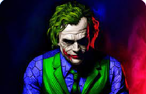
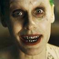
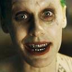

batman
Bruce Wayne es el único personaje que se identifica como Batman y aparece en Batman, Detective Comics, Batman y Robin, y Batman: The Dark Knight. Dick Grayson vuelve al manto de Nightwing


Harley Quinn
La creación de Harley Quinn fue una idea de último minuto propuesta por el escritor estadounidense Paul Dini para modificar una escena del vigésimo-segundo episodio de Batman: la serie animada



joker
Si bien hay varias versiones del Joker, generalmente se lo caracteriza por una personalidad psicópata, con humor sádico y retorcido, lo que le ha llevado a ser catalogado como la antítesis de Batman